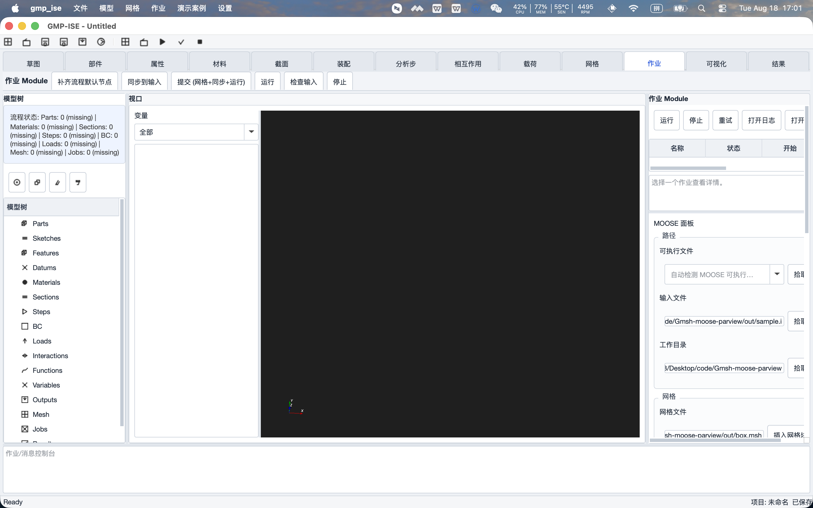
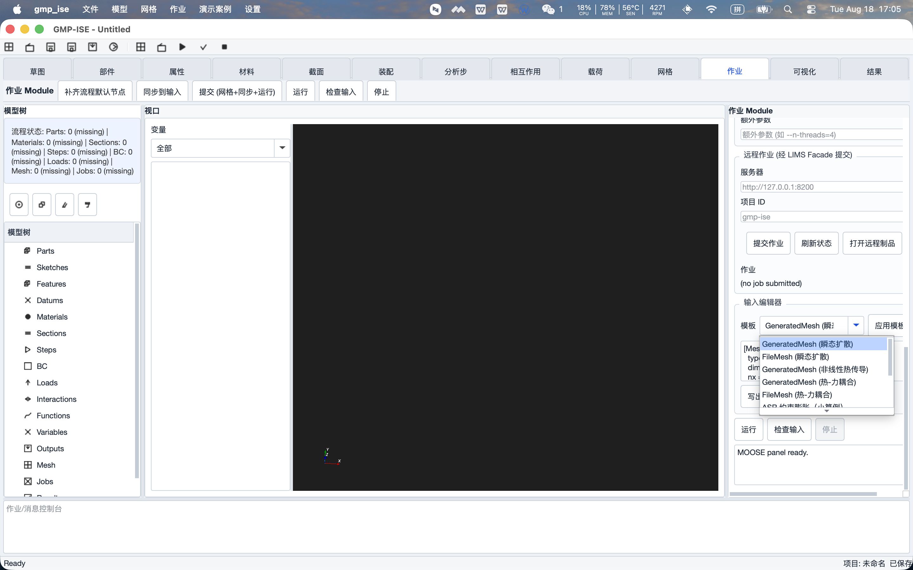
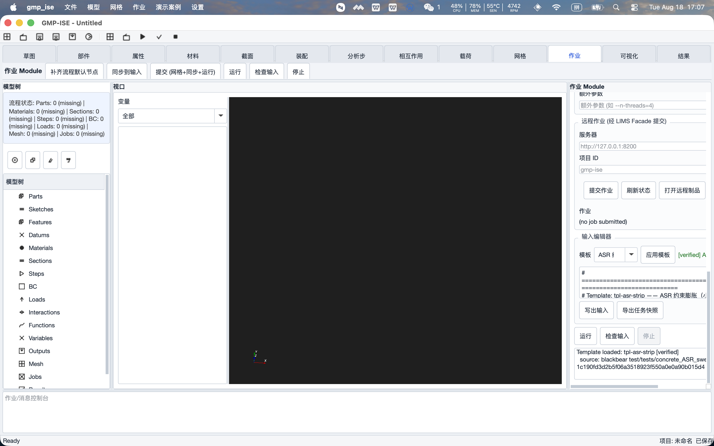

先澄清一个容易找错的地方：菜单栏的 "演示案例"（载入瞬态扩散 / 热-力耦合 / 非线性热传导）是早期的完整演示算例，不包含模板库。
模板库在 "作业"页签 → 右侧 MOOSE 面板 → "输入编辑器"分组 → "模板"下拉 中。
1. 模板库在哪里
- 启动应用：
cd /Users/a123/Desktop/code/Gmsh-moose-parview && ./build/gmp_ise - 点击顶部模块页签 作业（第 11 个页签，"网格"和"可视化"之间）。
- 右侧 MOOSE 面板 滚动到最底部的 "输入编辑器" 分组，即可看到 "模板" 下拉框和 应用模板 按钮。

图 1：点击"作业"页签，右侧即 MOOSE 面板（顶部是路径/输入文件等，模板在面板最底部）

图 2："输入编辑器"分组的模板下拉——上方 5 项是旧内置示例，下方 4 项是新模板库（ASR × 2、2D 坝 × 2）
2. 4 个内置模板
| 模板名（下拉中显示） | key | 状态 | 规模/用途 |
|---|---|---|---|
| ASR 约束膨胀（小算例） | tpl-asr-strip | verified | 秒级，主链冒烟/联调默认；官方回归 test_strip 派生 |
| ASR 约束膨胀（完整算例） | tpl-asr-full | verified | 小时级，正式演示；官方 HEAVY test_full 派生 |
| 2D 坝静力预载 | tpl-dam-2d-static | prototype | 分钟级，静力结果快速查验 |
| 2D 坝静力—动力两阶段 | tpl-dam-2d-dyn | prototype | 十分钟级，地震时程演示（Newmark γ/β 可改） |
状态含义：verified 模板派生自官方回归且结果与金标准在官方容差内一致；
prototype 模板仅为原型（未经官方回归对照），界面橙色标注，不作为工程结论。
每个模板头注释都记录了来源仓库、来源文件、SHA-256 和提取日期。
3. 生成 .i 的两种方式
3.1 加载模板
- 在"模板"下拉中选中目标模板（如 ASR 约束膨胀（小算例）），点击 应用模板。
- 模板行右侧出现状态标签（绿色
[verified]/ 橙色[prototype]），编辑区载入完整的 .i 内容，下方日志打印Template loaded: tpl-asr-strip [verified] source: blackbear ...。 - 手工修订：编辑区就是纯文本，可直接改任何参数（例如把
num_steps改小做快速试算）。改错也没关系——提交时远端会做--check-input预检并返回错误原因。

图 3：应用模板后——绿色 [verified] 标签、编辑区载入模板头注释、日志记录来源与 SHA
3.2 方式一：写出输入（只要一个 .i 文件）
- 点击 写出输入，选择保存位置，即得到当前编辑区内容的
.i文件。 - 适合：本地试算、把 .i 拷给同事、手工放到其他环境运行。注意：如果模板引用了外部网格文件（如 mesh_contact_strip.e），需要自行一并拷贝。
3.3 方式二：导出任务快照（推荐，远程计算用）
- 点击 导出任务快照，选择一个空目录。
- 导出结果 = 当前 .i + 所有引用的网格/附件文件 +
manifest.json（含每个文件的 SHA-256 和 CONTRACT-JOB 契约字段）。日志会逐项打印文件哈希。 - 特性：确定性——同一内容两次导出，所有文件哈希完全一致；manifest 可直接用于 C06 作业提交，也是计算结果反查输入的凭证。
4. 提交到 138 远程计算
前提服务（缺一个就连不上，详见 damASR《端到端主链人工验证指南》第 1 节）：
138 代理
start-138.sh start 、SSH 隧道 ssh -N -L 8357:127.0.0.1:8357 demo-process-138 、LIMS API（8200）。- MOOSE 面板 "远程作业（经 LIMS Facade 提交）" 分组：服务器保持
http://127.0.0.1:8200，项目 ID 默认gmp-ise（会记住，下次不用改）。 - 点击 提交作业：默认使用最近一次导出的快照目录（没导出过则弹窗让你选目录）。成功后状态标签显示
job_… : queued。 - 点击 刷新状态：可见
preparing → running → succeeded（小算例约 4 秒），以及 percent / step / 物理时间。 - 失败时：状态区显示
check_input_failed等错误码与原因；LIMS 页面同步可见（红色 failed 徽标）。
图 4：远程作业分组（服务器/项目 ID/提交/刷新/打开制品）与输入编辑器（模板/应用模板/写出输入/导出任务快照）
5. 打开远程制品（.e 可视化）
- 作业 succeeded 后，点击 打开远程制品。
- 对话框列出 LIMS 固定目录中的制品包（invalid 包置灰并显示原因），展开选择
results/…_out.e，双击或确认后自动下载（显示进度）并在可视化页打开。 - 同一文件再次打开秒开（本地缓存 + SHA-256 校验命中）。
- 可视化页操作：标量选
Cell: stress_yy、时间条拖到最后一步；该 ASR 算例空间近均匀，看点是时间演化（t=0 全 0 → t=500000 混凝土深蓝、钢套红）。 - 同一制品也能在 LIMS 页面"数字孪生与混合仿真平台 → 远程实时仿真 → 制品库"中查看/下载。
6. 常见问题
| 现象 | 原因与处理 |
|---|---|
| 模板下拉里没有 ASR / 2D 坝模板 | 应用版本过旧。在仓根执行 cmake --build build -j8 后重启；模板目录也可用环境变量 GMP_MOOSE_TEMPLATES 显式指定 |
| "演示案例"菜单里找不到模板 | 演示案例是旧的完整演示，不是模板库；模板在"作业 → MOOSE 面板 → 输入编辑器" |
| 提交作业无反应/报网络错误 | 检查 LIMS API（8200）与 SSH 隧道是否在运行；面板日志有详细错误 |
| 提交返回 check_input_failed | 手工修订引入了语法错误；按返回信息修正后重新导出快照再提交 |
| 制品对话框里包是灰色 | 该包未通过完整性校验（invalid），原因显示在条目上；valid 包才能下载 |
相关文档：damASR 仓
docs/verification/端到端主链人工验证指南.md（服务启动与完整验收场景）、
docs/plans/端到端主链贯通实施计划.md §5.2.1（模板清单与状态口径）。